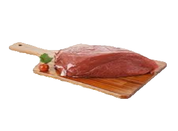
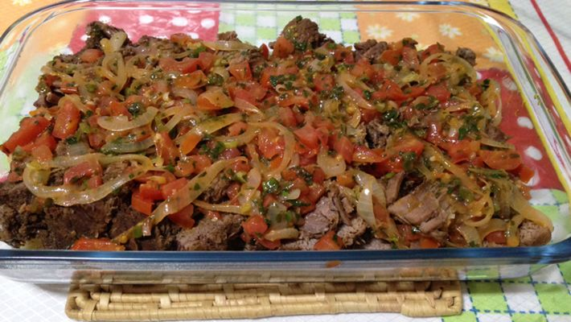

The butcher
Cortes nobres com atendimento nobre

O melhor lugar está aqui !
por Gustavo Blasius > Receitas > Paleta
Atualizado 22/07/2019
Como preparar: Paleta bovina

Ingredientes
- 1 peça de paleta bovina (não cortar a carne, usar a peça)
- sal a gosto
- 2 colheres de cominho
- colorau a gosto
- 4 cabeças de alho triturado
- 1 tablete de caldo knorr, sabor carne
- 2 colheres de azeite
- 2 colheres de vinagre
- salsa, cebolinha e coentro
- 1 cebola
- 1 colher de margarina
- 1 tomate
Como preparar
- Faça vários furos na peça da carne com a faca.
- Misture todos os temperos num recipiente e regue sobre a carne, amaciando a carne para que penetrem os temperos.
- Deixe pegar o tempero por aproximadamente de 1 a 2 horas.
- Na panela de pressão, coloque óleo e, quando o óleo estiver quente, coloque a peça da carne e deixe refogar bem.
- Quando a carne estiver dourada dos dois lados, cubra-a com água já quente.
- Deixe a peça por aproximadamente 40 a 50 minutos na pressão, ou até ficar macia e cozida por completo.
- Retire da panela de pressão e, em seguida, corte a carne em rodelas.
- Coloque a margarina numa panela e deixe derreter, adicione as cebolas cortadas em rodelas e deixe dourar.
- Após este passo, adicione o tomate picado sobre a cebola, deixe refogar mais um pouco e salpique orégano.
- Coloque a margarina numa panela e deixe derreter.
- Adicione a cebola cortada em rodelas para dourar e, após dourada, adicione o tomate picado e deixe refogar mais um pouco.
- Salpique orégano sobre a carne e pronto, fica divino; bom apetite!